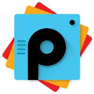

|
 PicsArtPicsArt is wildly popular, and for good reason. This feature-packed photo editing app has everything you need to create fun digital projects. Hundreds of editing tools, filters, effects, overlays, and brushes let you do just about anything that you can dream up. To top it off, PicsArt is also home to a blossoming social community where art lovers can share, collaborate, and compete in contests. Now you can save JPEG and BMP, and several new effects are available for your artistic pleasure. Download Link: PicsArtFrequently Asked Questions: FAQ |
VineIf you prefer your entertainment to come in the form of six-second video loops, you'll be happy to hear that Vine has recently received a few new features in its latest update. Now you can show love to your favorite Vine stars even quicker with the new double tap to like feature and find new Viners to follow using the Find People feature. Download Link: VineFrequently Asked Questions: FAQ |
6tag6tag is the name of a popular third-party Instagram app for Windows Phone. It is developed by Rudy Huyn, and it is one of the most full-featured Instagram apps available, even offering unique features not found in the official Instagram apps on iOS, Android, or Windows Phone. The 6tag app contains numerous features not found in official Instagram apps, including:
Download Link: 6tagFrequently Asked Questions: FAQ |
SpotifySpotify is the only music APP that gives you access to music from all round the world. It also has every music record you can ever think of. The app allows you to create your own playlist and list to music on the go. Moreover, it has many cool features to look out for. Spotify being free is becoming a cool trend on the go. Download Link: SpotifyFrequently Asked Questions: FAQ |
VLC PlayerVLC has a great reputation for being an all-in-one media player that will play just about anything you throw at it with minimal fuss and maximum configurability. VLC is also known to run most of the file types. Clarity offered by VLC is also good. VLC can be termed as an all in one player. Download Link: VLC PlayerFrequently Asked Questions: FAQ |